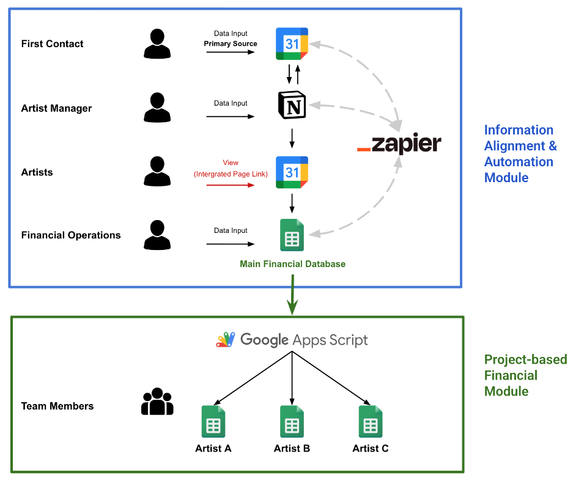
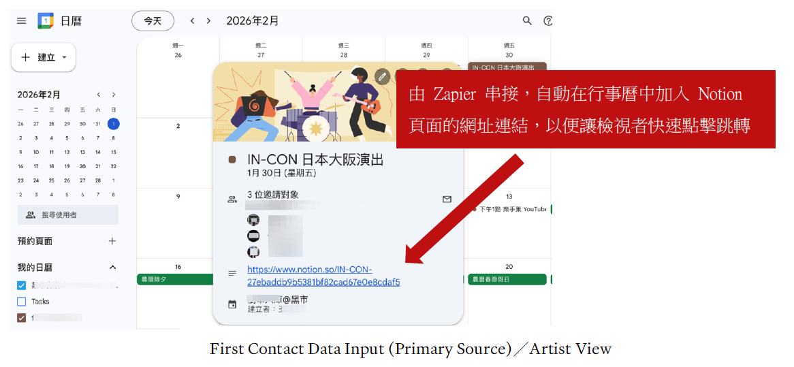
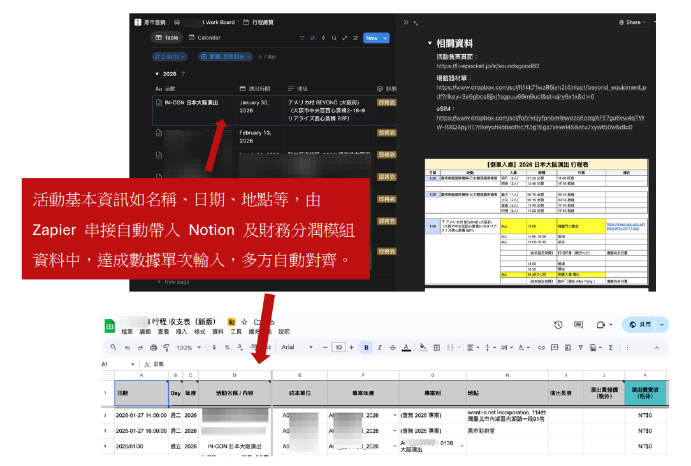

專案背景
黑市音樂在由個人公司轉型為外商台灣分公司的過程中，面對股東監督、營運管理與多組藝人管理的多重壓力，核心痛點在於：同一筆演出資料（如演出行程）由藝人、經紀執行、財務三方各自記錄。
一旦行程變動，資訊不同步便導致溝通落差與帳務錯誤。我設定的目標是設計一套「單次輸入、多方應用」的自動化工作流程，讓不同工具習慣的夥伴都能順暢運作。
核心挑戰
不能設計一個巨大的單一表格強迫所有人使用，而是需要在四種角色之間找到各自最輕量的操作路徑。
- 老闆、藝人、經紀執行、財務的工具習慣與資訊深度需求各不相同
- 行程一旦變動，三份資料需手動同步，重工且容易出錯
- 每組藝人的分潤合約條件不同，財務報表邏輯高度客製化
我的角色
01
多方需求分析
分析四種角色（老闆、藝人、經紀、財務）的工具習慣與資訊深度需求，設計各自最輕量的操作路徑，而非強迫所有人使用同一介面。
02
跨工具自動化架構
以 Google Calendar 為統一輸入端，透過 Zapier 自動串接 Notion 資料庫與 Google Sheets，讓行程異動時各端即時同步，消除手動更新重工。
03
財務模組化設計
建立專案別財務分潤系統，以 Google App Script 從主帳目產出各藝人專屬報表，將複雜的客製分潤邏輯標準化，財務端只需維護主資料庫。

完整系統架構：上層為 Zapier 串接的資訊對齊模組，下層為 Google Apps Script 驅動的專案別財務分潤模組
執行過程
-
01
梳理痛點與角色需求盤點三層重工的根本原因，訪談各角色的實際工作流程，確認不同工具習慣與所需的資訊深度，作為架構設計的依據。
-
02
設計資訊對齊與自動化模組以 Google Calendar 為統一輸入端，透過 Zapier 串接 Notion 與 Google Sheets，讓行程資訊「輸入一次、四端同步」；老闆和藝人用 Calendar、經紀用 Notion、財務用試算表，各走最輕量的路徑。

First Contact 輸入 Google Calendar 後，Zapier 自動在 event 中帶入對應 Notion 頁面連結，藝人端點擊即可查看完整活動細節 -
03
建立專案別財務分潤系統將每組藝人的每一個活動定義為獨立「專案別」，以 Google App Script 從主帳目自動產出各藝人財務報表；複雜的分潤邏輯（不同合約年度、不同分潤比）預設為公式，財務端只需選取對應專案即可完成計算。

Google Calendar 輸入後，活動基本資訊自動帶入 Notion 資料庫（左）與財務收支表（下），達成資料單次輸入、多方自動對齊 -
04
落地與驗證確認各角色都能在自己熟悉的工具中正確操作，並在實際行程異動時驗證自動同步是否正常運作，確保系統被實際使用而非束之高閣。
專案成果
- 三方分散記錄的資料重工問題消除，達成單次輸入、四端即時同步更新
- 財務分潤流程模組化，各藝人報表可從主帳目快速產出，不再需要個別客製
- 四種角色各自使用最熟悉的工具，系統設計符合實際操作習慣，真正被落地使用
可轉移能力
多方需求分析與方案設計
在利害關係人需求衝突時找到兼顧各方的解法，對應 CSM 理解企業客戶需求並設計合作方案的能力
Google Sheet 與工具整合能力
跨平台自動化串接與模組化資料設計，直接對應 JD 強調的資料統整與工具使用技能
流程標準化設計
將一次性的客製作業轉化為可重複執行的標準流程，對應企業合作案中的成效追蹤與可擴充性
專案說明
查看完整專案說明（Notion）